Se encuentra en la región de la torre de Necluda, en una pequeña isla al sur de la Aldea Hatelia. Para llegar a ella puedes saltar con paravela desde el punto más alto al sur (ya dentro del territorio de la torre de Farone). Así llegarás planeando sin problemas.
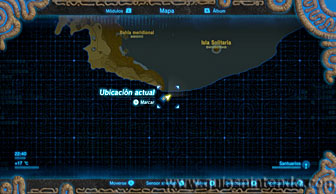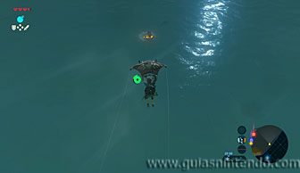
Dentro del santuario vas a encontrar un miniguardián 4.0. Tendrás que derrotarlo para abrir la puerta que conduce al altar. Puedes comenzar atacándole esquivando sus ataques y contraatacando. Cuando él vaya a atacar a distancia, puedes cubrirte con las columnas para no sufrir daño.
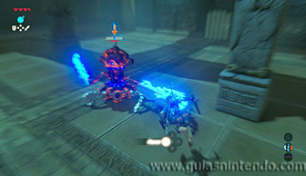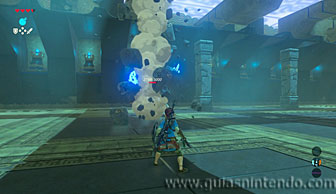
Otro de sus ataques consiste en un láser que va disparando en círculo a su alrededor, no podrás acercarte a él a menos que lo hagas por el aire. En este momento podrás elevarte con la paravela y caerle desde arriba. No es necesario que le ataques, puedes esperar a que termine de hacerlo él para usar algún ataque menos arriesgado y más efectivo.
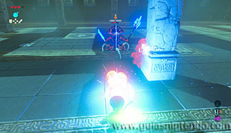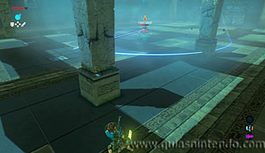
Si tienes un arma que le congele, podrás usarla para ganar unos segundos y poder acercarte a él. Si además le golpeas con un arma eléctrica (como la espada del rayo que se consigue en el Santuario de Jitahm) en el momento que está congelado, lograrás rebajar su energía de manera rápida y segura.
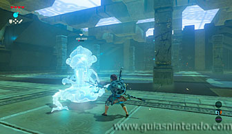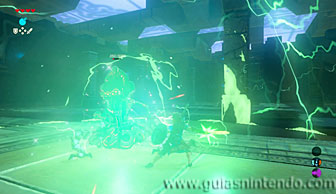
Cuando le quede poca energía va a intentar destruirte con un rayo lanzado directamente hacia ti. Puedes cubrirte con una columna (que explotará), pero lo mejor es que termines con él usando su propio rayo. Cúbrete y devuelve su rayo con una guardia perfecta.
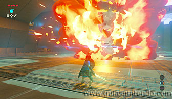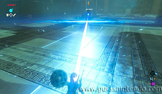
Al destruirlo se abrirá la salida y podrás abrir un cofre que contiene la camiseta de escalada. Cuando llegues al altar podrás examinarlo para obtener un símbolo de valía.
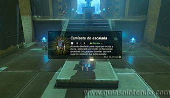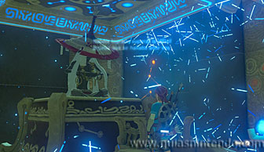